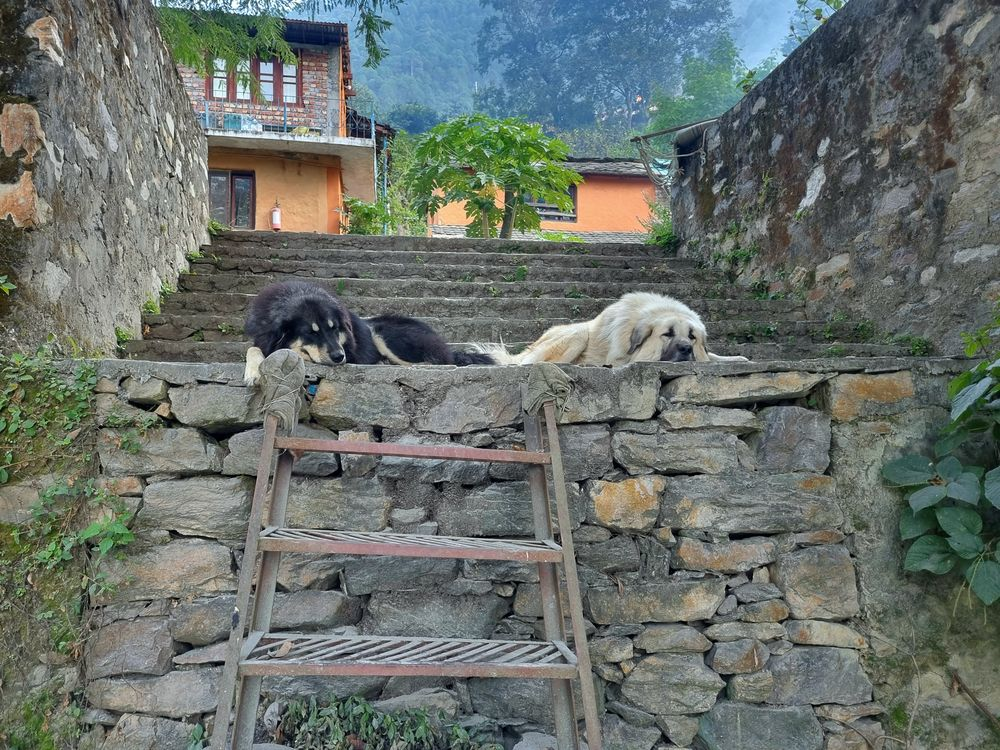

Professional Background
To be eligible for this program you must have spent over 7 years working with non-profits or social enterprises in India. In this first iteration, preference will be given to candidates in programmatic roles.
Selection of Candidates will be done on the following criteria:
- Minimum of seven years of experience in the social sector in India.
- A proven track record of having worked on challenging problems in resource constrained environments.
- A clear articulation of the personal blockers you are navigating, and how a recharge like this can help.
- A demonstrated need for resources to support personal development.
- In case of multiple applications from the same organisation, we will only select one person. We will select the candidate that best fit the program, ranked on other criteria.
The selection will be done by a panel of social sector leaders.